Spectral relaxations of the persistent rank invariant
\dagger Khoury College of Computer Sciences, Northeastern University
\ddagger. Department of Mathematics and Khoury College of Computer Sciences, Northeastern University
Spectral Rank Invariants
We study spectral-relaxations of persistent rank invariants \beta_p^{\ast} and \mu_p^\ast that:
- Smoothly interpolates persistent rank function \leftrightarrow Laplacian norms
- “Matrix-free” computation in \approx O(n) memory
- Admit fast (1 \pm \epsilon) approximation for any \epsilon > 0
- Variety of applications, e.g. featurization, optimization, metric learning
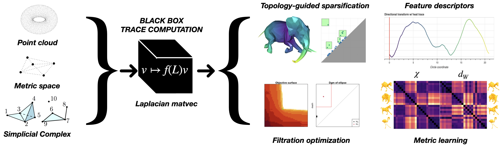
Motivation: Finding topological structure
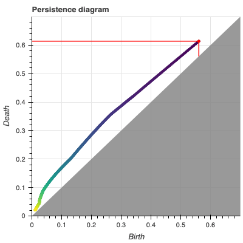
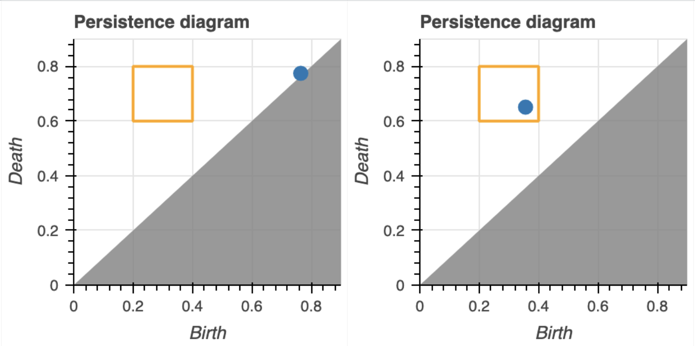

\alpha^\ast = \argmax_{\alpha \in \mathbb{R}} \; \mathrm{card}\big(\, \left.\mathrm{dgm}(K_\bullet, \, f_\alpha) \right|_{R} \, \big)
We want to optimize persistence invariants in parameterized settings!
Why not just use diagrams?
Pro: Diagrams are stable, well-studied, and information rich.
The Problem: Computation


Con: Extending the R = \partial V to parameterized settings is non-trivial
Maintaining the R = \partial V decomposition “across time” \implies huge memory bottleneck
Main bottleneck in the 2D persistence algorithm RIVET
The Rank Invariant
Duality between diagrams \leftrightarrow rank function:
\mathrm{dgm}_p(\, K_\bullet, \, f \, ) \triangleq \{ \, ( \, i, j \,) \in \Delta_+ : \mu_p^{i,j} \neq 0 \, \} \; \cup \; \Delta
\textstyle \mu_p^{i,j} = \left(\beta_p^{i,j{\small -}1} - \beta_p^{i,j} \right) - \left(\beta_p^{i{\small -}1,j{\small -}1} - \beta_p^{i{\small -}1,j} \right), \quad \beta_p^{k,l} = \sum\limits_{i \leq k} \sum\limits_{j > l} \mu_p^{i,j}
“Fundamental Lemma of Persistent Homology” \leftrightarrow diagrams characterize their ranks
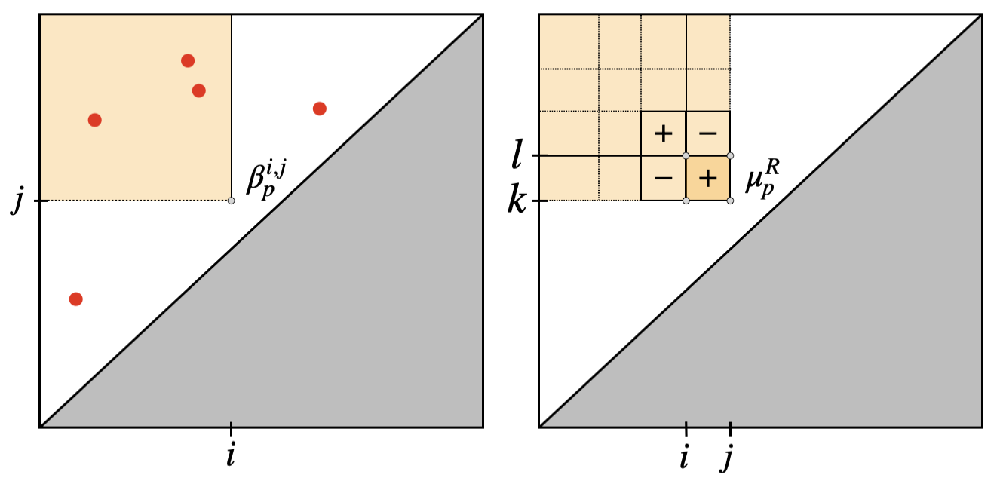The Rank Invariant
“…whenever a persistence diagram is sought, it is enough to construct the corresponding persistence measure” (Chazal et al. 2016)
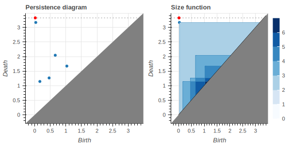
Problem: rank is still a discontinuous function!
The Rank Invariant
Idea: “Relax” this integer-valued function via spectral characterization of rank
\begin{equation*} \beta_p^{a,b} = \mathrm{rank}(H_p(K_a) \to H_p(K_b)) \quad \Leftrightarrow \quad \mathrm{rank}(X) = \sum_{i=1}^n \, \mathrm{sgn}_+(\sigma_i) \end{equation*}
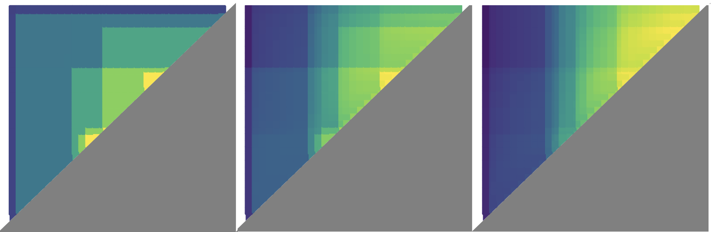
Relaxing the rank function
\mathrm{rank}(\partial) = \mathrm{rank}(\underbrace{\partial \partial^T}_{\mathcal{L}}) = \sum_{i=1}^n \, \mathrm{sgn}_+(\lambda_i) \approx \sum_{i=1}^n \, \phi(\lambda_i, \tau)
\text{ where } \phi(x, \tau) \triangleq \int\limits_{-\infty}^x\hat{\delta}(z, \tau) dz \text{ for a smoothed Dirac measure } \hat{\delta}^1
\phi : \mathbb{R} \to \mathbb{R} induces a unique^2 spectral function F: S_{n} \to \mathbb{R} via its trace:
\begin{align} \Phi_\tau(\mathcal{L}) &\triangleq U \phi_\tau(\Lambda) U^T \\ \lVert \Phi_\tau(\mathcal{L}) \rVert_\ast &= \sum\limits_{i=1}^n \phi(\lambda_i, \tau) = \sum\limits_{i=1}^n e_i^T \Phi_\tau(\mathcal{L}) e_i \end{align}
Spectral functions
For any smoothed Dirac measure1 \hat{\delta} and operator monotone \phi: \mathbb{R}_+ \times \mathbb{R}_{++} \to \mathbb{R}_+, Bi, Han, and Pan (2013) show that:
(\tau-approximate) \vphantom{\hat{\delta}}
(Monotone) \vphantom{\lVert \phi_{\tau}(X) \rVert_\ast}
(Smooth) \vphantom{\mathbb{R}_1^{n \times m^{\ast^{\ast}}}}
(Explicit) \vphantom{\partial \lVert \Phi_\tau(\cdot) \rVert_\ast}
0 \leq \mathrm{rank}(X) - \lVert \Phi_\tau(X) \rVert_\ast \leq c(\hat{\delta})
\lVert \Phi_{\tau}(X) \rVert_\ast \geq \lVert \Phi_{\tau'}(X) \rVert_\ast for any \tau \leq \tau'
Semismooth2 on \mathbb{R}^{n \times m} \vphantom{\mathbb{R}_1^{n \times m^{\ast^{\ast}}}}, differentiable on \mathbf{S}_+^m
Differential \partial \lVert \Phi_\tau(\cdot) \rVert_\ast has closed-form soln.
Function/operator pairs ( \phi_\tau, \Phi_\tau ) particular specializations of matrix functions: \Phi_\tau(X) = U \phi_\tau(\Lambda) U^T
Commonly used in many application areas, e.g. compressed sensing (Li 2014)
Interpretation: Regularization
Ill-posed linear systems Ax = b are often solved by “regularized” least-squares:
x_\tau^\ast = \argmin\limits_{x \in \mathbb{R}^n} \lVert Ax - b\rVert^2 + \tau \lVert x \rVert_1
The minimizer is given in closed-form by the regularized pseudo-inverse:
x_\tau^\ast = (A^T A + \tau I)^{-1} A^T b
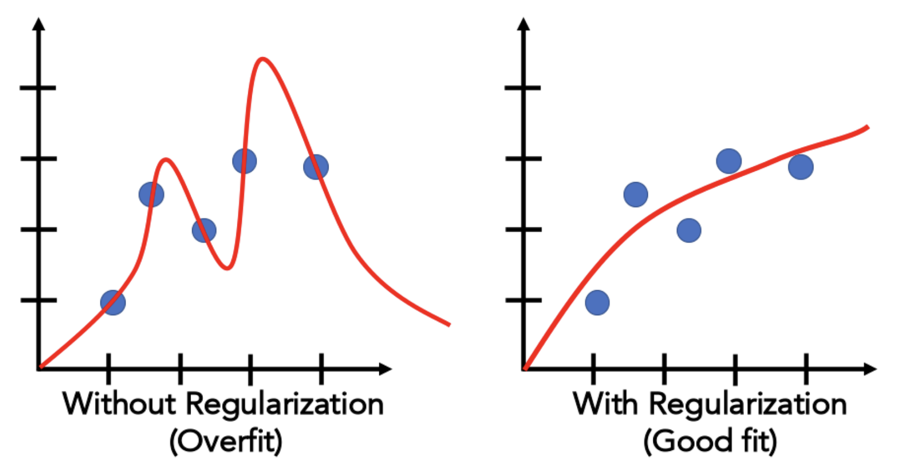
Interpretation: Regularization
Under the appropriate parameters^1 for \nu and p, \phi takes the form:
\phi(x, \tau) = \frac{x^2}{x^2 + \tau}
The corresponding Löwner operator and its Schatten 1-norm is given^2 by:
\Phi_\tau(X) = (X^T X + \tau \, I_n)^{-1} X^T X, \quad \quad \lVert \Phi_\tau(X) \rVert_\ast = \sum\limits_{i = 1}^n \frac{\sigma_i(X)^2}{\sigma_i(X)^2 + \tau}
This the Tikhonov regularization in standard form used in \ell_1-regression (LASSO)
\Leftrightarrow \tilde{\beta}_p is a “Tikhonov-regularized Betti number”
Application #1: Filtration optimization
\alpha^\ast = \argmax_{\alpha \in \mathbb{R}} \; \mathrm{card}\big(\, \left.\mathrm{dgm}(K_\bullet, \, f_\alpha) \right|_{R} \, \big)
Application: Filtration optimization
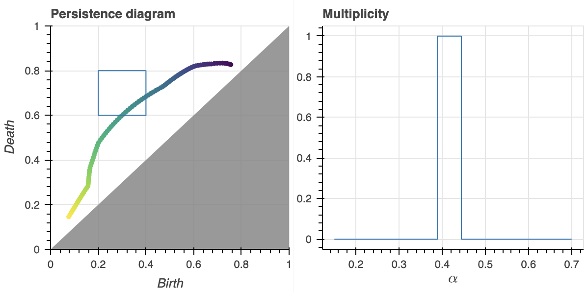
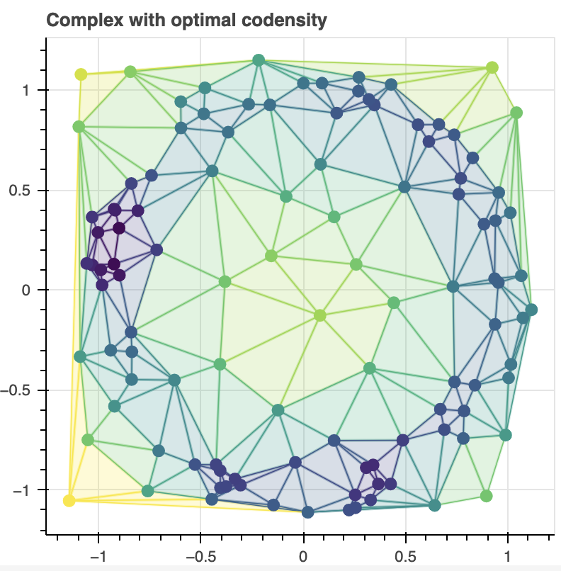
\alpha^\ast = \argmax_{\alpha \in \mathbb{R}} \; \mathrm{card}\big(\, \left.\mathrm{dgm}(K_\bullet, \, f_\alpha) \right|_{R} \, \big)
Application: Filtration optimization
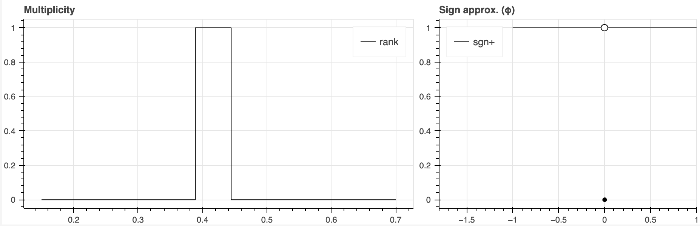\mu_p^{R} = \mathrm{rank}\begin{bmatrix} \partial_{p+1}^{j + 1, k} & 0 \\ 0 & \partial_{p+1}^{i + 1, l} \end{bmatrix} - \mathrm{rank}\begin{bmatrix} \partial_{p+1}^{i + 1, k} & 0 \\ 0 & \partial_{p+1}^{j + 1, l} \end{bmatrix}
Application: Filtration optimization
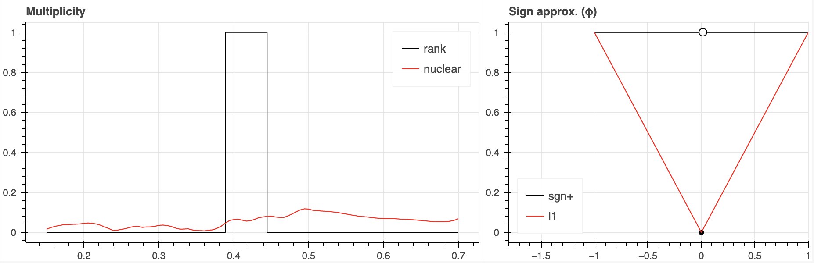\mu_p^{R} = \mathrm{tr}\begin{bmatrix} \lVert \partial_{p+1}^{j + 1, k} \rVert_\ast & 0 \\ 0 & \lVert \partial_{p+1}^{i + 1, l} \rVert_{\ast} \end{bmatrix} - \mathrm{tr}\begin{bmatrix} \lVert \partial_{p+1}^{i + 1, k} \rVert_\ast & 0 \\ 0 & \lVert \partial_{p+1}^{j + 1, l} \rVert_\ast \end{bmatrix}
Application: Filtration optimization
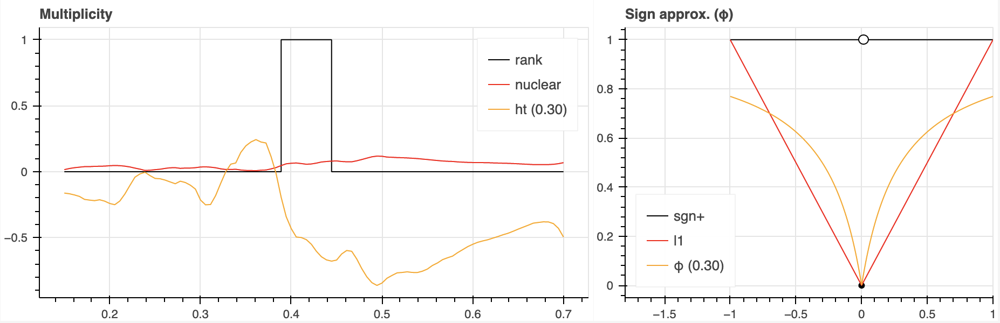\hat{\mu}_p^{R} = \mathrm{tr}\begin{bmatrix} \Phi_\tau(\partial_{p+1}^{j + 1, k}) & 0 \\ 0 & \Phi_\tau(\partial_{p+1}^{i + 1, l}) \end{bmatrix} - \mathrm{tr}\begin{bmatrix} \Phi_\tau(\partial_{p+1}^{i + 1, k}) & 0 \\ 0 & \Phi_\tau(\partial_{p+1}^{j + 1, l}) \end{bmatrix}
\boxed{\text{There exists a positive }\tau^\ast > 0 \text{ such that } \mu_p^R = \lceil \hat{\mu}_p^R \rceil \text{ for all } \tau \in (0, \tau^\ast]}
Application: Filtration optimization
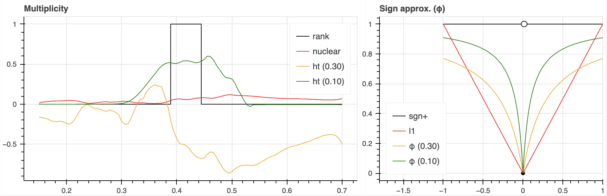\mu_p^{R} = \mathrm{tr}\begin{bmatrix} \Phi_\tau(\partial_{p+1}^{j + 1, k}) & 0 \\ 0 & \Phi_\tau(\partial_{p+1}^{i + 1, l}) \end{bmatrix} - \mathrm{tr}\begin{bmatrix} \Phi_\tau(\partial_{p+1}^{i + 1, k}) & 0 \\ 0 & \Phi_\tau(\partial_{p+1}^{j + 1, l}) \end{bmatrix}
Application: Filtration optimization
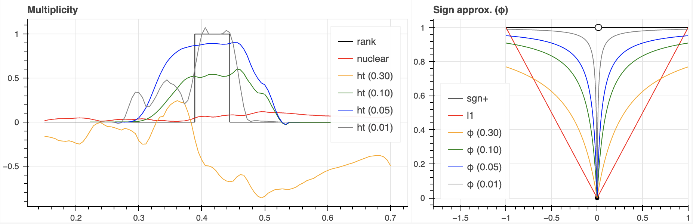\mu_p^{R} = \mathrm{tr}\begin{bmatrix} \Phi_\tau(\partial_{p+1}^{j + 1, k}) & 0 \\ 0 & \Phi_\tau(\partial_{p+1}^{i + 1, l}) \end{bmatrix} - \mathrm{tr}\begin{bmatrix} \Phi_\tau(\partial_{p+1}^{i + 1, k}) & 0 \\ 0 & \Phi_\tau(\partial_{p+1}^{j + 1, l}) \end{bmatrix}
Similar to the Iterative Soft-Thresholding Algorithm (ISTA) (Beck 2017)
The Computation
Eigen decomp. A = U \Lambda U^T bounded by \Theta(n^3) time and \Theta(n^2) space1
However, if v \mapsto Av \approx O(n), then \Lambda is obtainable in O(n^2) time and O(n) space!
Algorithm: For some random v \in \mathbb{R}^n, do:
\begin{align*} K_j &= [ v \mid Av \mid A^2 v \mid \dots \mid A^{j-1}v] && \\ Q_j &= [ q_1, q_2, \dots, q_j] \gets \mathrm{qr}(K_j) && \\ T_j &= Q_j^T A Q_j && \end{align*}
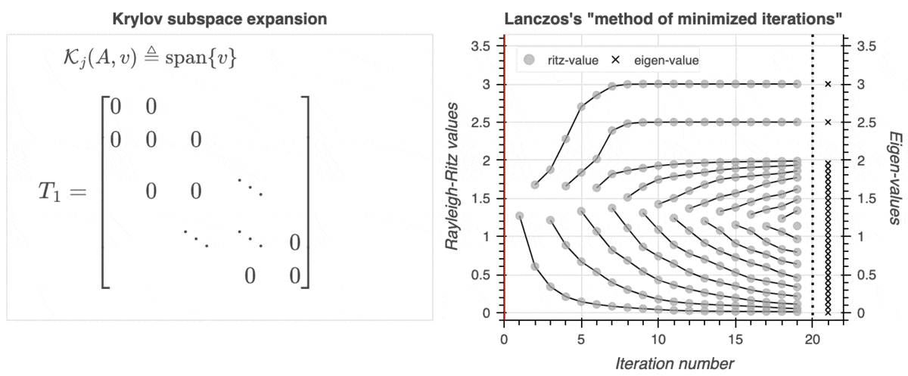
Theorem (Simon 1984): Given a symmetric rank-r matrix A \in \mathbb{R}^{n \times n} whose matrix-vector operator A \mapsto A x requires O(\eta) time and O(\nu) space, the Lanczos iteration computes \Lambda(A) = \{ \lambda_1, \lambda_2, \dots, \lambda_r \} in O(\max\{\eta, n\}\cdot r) time and O(\max\{\nu, n\}) space when executed in exact arithmetic.
Randomized trace approximation
Trace generalizes to matrix functions via stochastic Lanczos quadrature^1
\mathrm{tr}(\Phi_\tau(X)) \approx \frac{n}{n_v} \sum\limits_{i=1}^{n_v} \bigg( e_1^T \, \Phi_{\tau}(T_i) \, e_1 \bigg ), \quad \quad T_i = \mathrm{Lanczos}(X, v_i)
For p-Laplacians, the complexity of v \mapsto L_p v is \approx O(m)^1 where m = \lvert K_{p+1}\rvert
\implies can compute \epsilon-approx.^2 of \mu_p^{\ast} or \beta_p^{\ast} with success probability 1 - \eta in:
O((m / \epsilon^{2}) \log(\eta^{-1})) \text{ time}, \quad O(m) \text{ space }
{\Large \text{ Matvecs are all you need! }}
Application: Computing \mathrm{dgm}’s in an output sensitive way
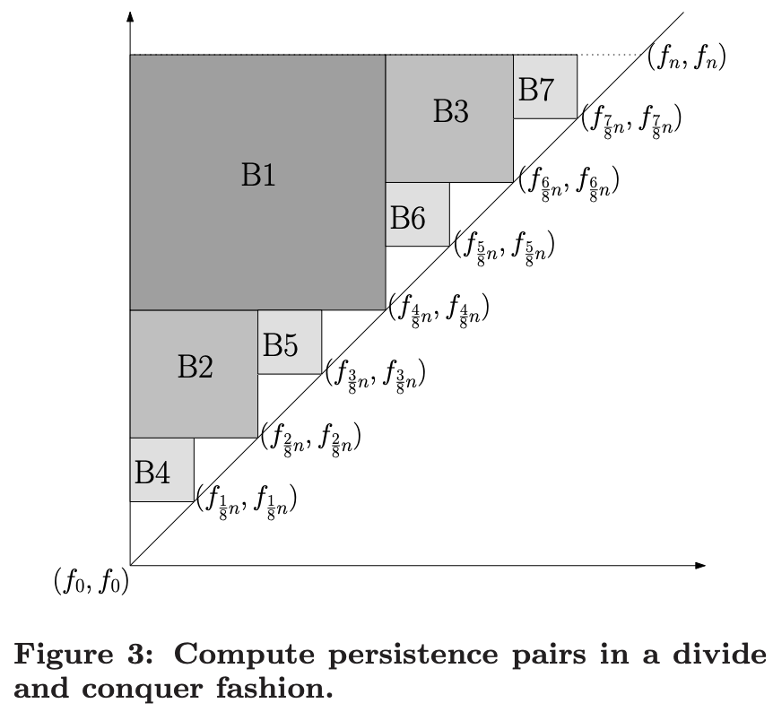
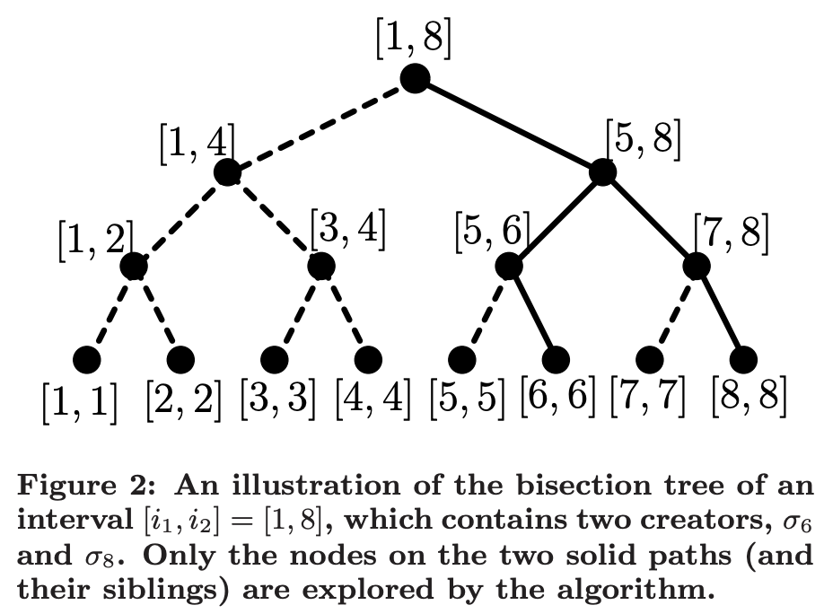
Theorem: For a simplicial complex K of size n = \lvert K_p \rvert, m = \lvert K_{p+1} \rvert, computing the \Gamma-persistent H_p pairs requires O(C_{(1-\delta)\Gamma} n^2 \log n) time and O(\max{(m,n)}) space.
Scalability: Low memory usage
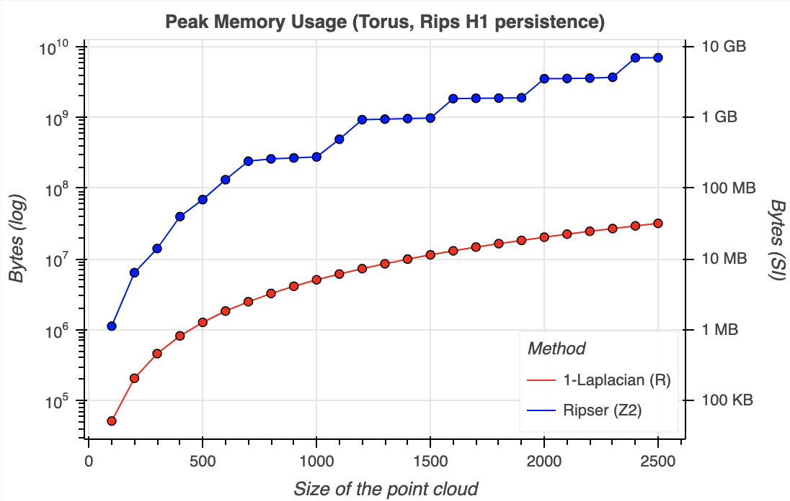
Asymptotics catch up: any reduction implementation uses O(n^2) space, we use O(n)!
Time Permitting: Variance
One barrier preventing SOTA performance in time: efficiency.
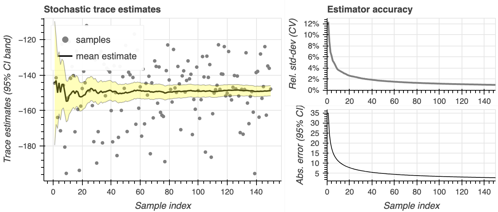Potential ways to improve efficiency include control variables Kleijnen, Ridder, and Rubinstein (2010), better estimators (e.g. Meyer et al. (2021)), and low-stretch spanning trees Pilavci et al. (2022)
Acknowledgements & Advertising
- Explicit proof of (unfactored) \beta_p^{\ast} in CT book by (Tamal Krishna Dey and Wang 2022)
- Rank-based PH algorithm originally due to (Chen and Kerber 2011)
- Insightful developments by (Bauer et al. 2022) and (Mémoli, Wan, and Wang 2022)
- (1\pm \epsilon)-Tr est. due to (Ubaru, Chen, and Saad 2017) + (Musco, Musco, and Sidford 2018)
Info: [gh]/peekxc or mattpiekenbrock.com
Trace estimator available @ gh/peekxc/primate
Thanks for listening!